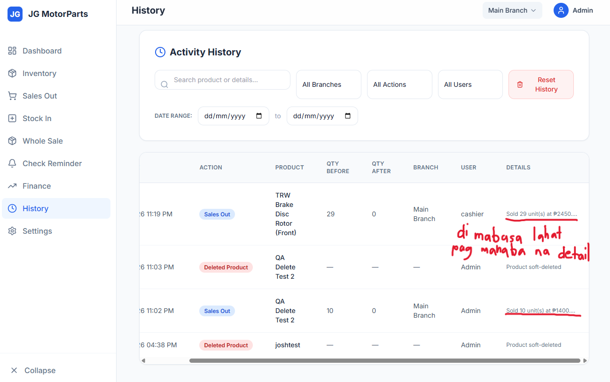
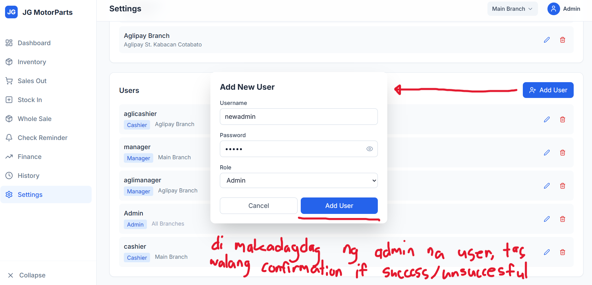
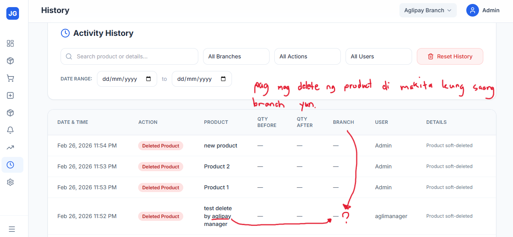
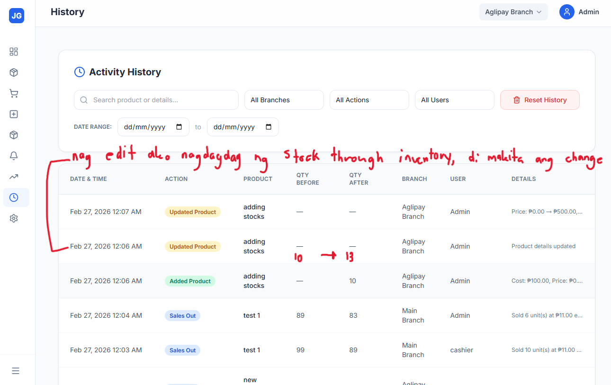

Use this section to log any new bugs discovered during the next QA cycle. You can copy the bug card format from Page 1 and adjust IDs (e.g., start from BUG-015) to keep numbering chronological across cycles.
BUG-015: History Details Column Truncates Long Text Low
Location: Admin → History → Activity History table → Details column
Steps: Log in as Admin → Go to History → Look for rows with long details text (e.g. Sales Out entries with quantity and price breakdown).
Expected: The full details string should be readable (either by wrapping to multiple lines or via a hover tooltip / click-to-expand so the entire message is visible).
Actual: The Details cell cuts off the text and ends with an ellipsis (...) with no way to reveal the full content. Important information about the transaction (units, prices) is hidden.
Impact: Makes it hard to audit specific activity history entries because staff cannot see the complete transaction description directly from the History view.
Recommendation: Allow the Details column to show the full message (e.g., wrap text within the cell) or add a clear interaction (hover tooltip or clickable icon/modal) that displays the complete details string so admins can read everything recorded.
Preview: Activity History screen with long details text truncated with an ellipsis.
History → Details column where long text cannot be fully read
BUG-016: Cannot Create Additional Admin User & No Feedback High
Location: Admin → Settings → Users → Add User modal (Role = Admin)
Steps: Log in as Admin → Go to Settings → Click Add User → Fill in Username, Password, set Role to Admin → Click Add User button.
Expected: The system should either successfully create the new admin (showing a clear success message and adding the user to the list) or show a clear error/validation message if additional admin accounts are not allowed or if the request fails.
Actual: Clicking Add User closes/does nothing visually, no success or error message is shown, and the new admin user is not added to the Users list.
Impact: Admins cannot reliably add another admin account and have no feedback whether the operation succeeded or failed, which can block handover, backup admin creation, or onboarding of new admins.
Recommendation: Ensure the Add User flow for the Admin role is fully wired to the backend with proper validation and error handling. Always show explicit feedback (success toast/banner and updated list, or a clear error message explaining why the admin cannot be created).
Preview: Settings screen with Add New User modal filled for an Admin role, where clicking Add User does not create the new admin or show any status message.
Settings → Users: Add User modal for creating an additional Admin
BUG-017: Deleted Product History Does Not Show Branch Medium
Location: Admin / Manager → History → Activity History table → Deleted Product entries
Steps: From a specific branch, delete a product (as Admin or Manager) → Open History → Filter or scan for the corresponding Deleted Product action.
Expected: For each deleted product entry, the History row should clearly indicate which branch the product belonged to at the time of deletion, so admins can see where the change happened.
Actual: Deleted Product entries do not show the branch context for the deleted item, making it unclear which branch the deletion came from, especially when viewing history while another branch is selected.
Impact: Reduces auditability for inventory changes—admins cannot easily answer which branch a given deleted product came from, which is important when multiple branches are in use.
Recommendation: Include the originating branch for deleted products directly in the History row (e.g., populate the Branch column or add it to the Details text) so branch-level inventory changes are fully traceable.
Preview: Activity History showing multiple Deleted Product entries without clear branch information for where each product was deleted.
History → Deleted Product entries lacking branch context
BUG-018: Inventory Edits Do Not Show Stock Change in History Medium
Location: Admin → Inventory (edit product) and Admin → History → Activity History table
Steps: Log in as Admin → Go to Inventory → Edit a product and increase its stock quantity → Save changes → Open History and check the corresponding Updated Product entries.
Expected: The History row for an inventory edit that changes stock should clearly show Qty Before and Qty After values (e.g. 10 → 13) and the Details should describe that the stock level was updated.
Actual: The Updated Product entries for this edit show dashes (—) for Qty Before and Qty After, and the Details cell only says “Product details updated” without specifying the stock change.
Impact: Makes it hard to audit stock adjustments from the History view; owners and admins cannot easily see how inventory levels changed over time for a given product.
Recommendation: When product edits include a stock change, log the old and new quantity into History (populate Qty Before/After and/or include a clear message in Details such as “Stock: 10 → 13”) so stock movements via Inventory are fully traceable.
Preview: Activity History showing Updated Product entries where quantity fields and details do not reflect the stock increase.
History → Updated Product rows missing clear stock before/after values
